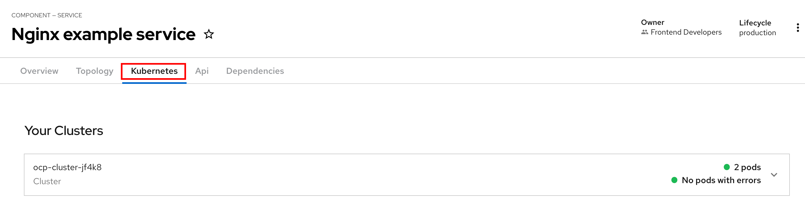
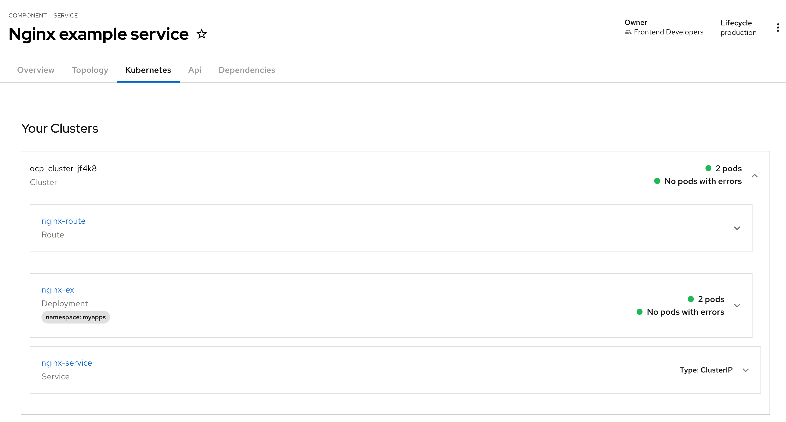
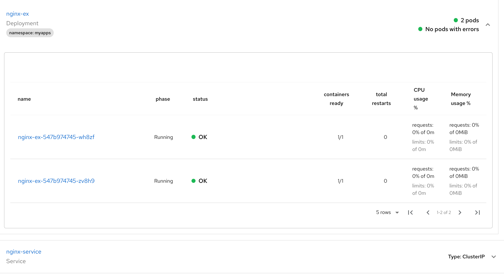
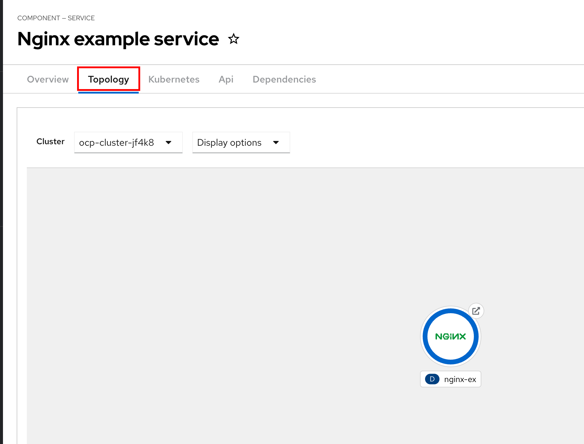
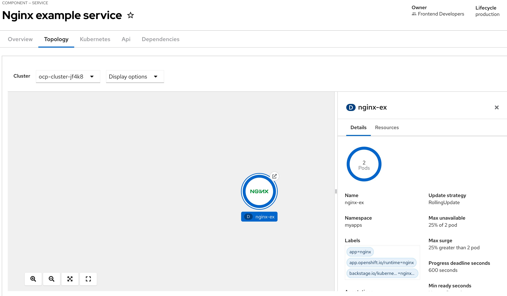
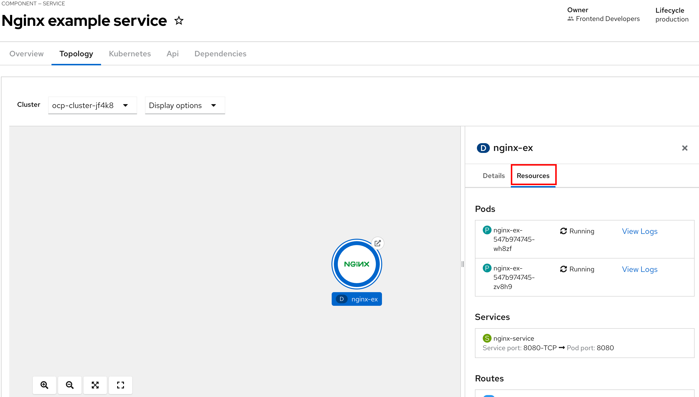

Kubernetes and Topology Plugin
Kubernetes Plugin
The Kubernetes plugin provides a read-only high-level overview of your applications and services deployed on Kubernetes, or the OpenShift Container Platform. Developers can easily check the status of their workloads across many different clusters (that is, a cluster where RHDH is deployed, or one or more external clusters hosting your applications and services).
It will display errors, if any, and provide a high-level glance at the deployments, pods, and other Kubernetes resources for a catalog item.
The Kubernetes plugin is made up of two separate smaller plugins, one back-end plugin that communicates with Kubernetes clusters, and a front-end plugin that visualizes the data in the RHDH component details page. To configure the Kubernetes plugin, you need to enable these two plugins in your dynamic plugin YAML configuration:
./dynamic-plugins/dist/backstage-plugin-kubernetes ./dynamic-plugins/dist/backstage-plugin-kubernetes-backend-dynamic
Apart from enabling the plugins, you need to configure the backend plugin to access the Kubernetes clusters. You do this by creating a new Kubernetes ClusterRole with cluster-wide read-only permissions and then assigning this role to a service account for the plugin.
As a final step, you need to configure the plugin parameters (Kubernetes API Server URL, credentials, service accounts and a list of custom resources that need to be fetched from the cluster) in the kubernetes: section of your app-config.yaml files.
Topology Plugin
The Topology plugin enables you to visualize Kubernetes resources such as Deployment, Job, Daemonset, Statefulset, CronJob, and Pods for any service deployed on the Kubernetes cluster. It requires the Kubernetes plugin to be enabled and configured for it to fetch data from clusters.
To configure the Topology plugin, you need to enable the plugin in your dynamic plugin YAML configuration:
./dynamic-plugins/dist/janus-idp-backstage-plugin-topology
Kubernetes Resource Labels and Catalog YAML Annotations
You may not want to visualize all workloads and resources in your Kubernetes cluster in RHDH. RHDH provides a flexible label and annotation mechanism to filter and identify resources that need to be visualized.
In your catalog-info.yaml files, you need to add backstage.io/kubernetes-id annotation under your components metadata field:
apiVersion: backstage.io/v1alpha1
kind: Component
metadata:
name: hello
title: Hello service
...
annotations:
backstage.io/kubernetes-id: 'hello'Correspondingly on the Kubernetes resource side, you need to add a backstage.io/kubernetes-id label to the resources you want to track in RHDH:
apiVersion: apps/v1
kind: Deployment
metadata:
name: hello
labels:
app: hello
backstage.io/kubernetes-id: 'hello'Adding this label to every resource on the Kubernetes side quickly becomes repetitive and difficult to manage, especially when you have a large number of workloads deployed, and each workload has numerous resources deployed in the cluster.
To simplify resource discovery, you can use label selectors to query the Kubernetes API server and return a list of resources matching your label. For example, to fetch all resources matching the label app=hello, add a backstage.io/kubernetes-label-selector annotation to your component catalog descriptor:
apiVersion: backstage.io/v1alpha1
kind: Component
metadata:
name: hello
title: Hello service
...
annotations:
backstage.io/kubernetes-label-selector: 'app=hello'The label selector annotation makes use of the fact that adding labels to resources like Deployment types, applies the labels to all resources (Pods, Services, Routes etc.) that are a result of a successful deployment. This annotation and label selector mechanism also works for custom resources like Tekton’s Pipeline resource, where labels applied to the parent Pipeline resource are inherited by resources generated from a pipeline run, such as Pipelinerun and Taskrun resources.
The following hands-on labs describe the detailed steps to enable and configure the Kubernetes and Topology plugins for a simple nginx web application.
Lab 1: Enabling the Kubernetes Plugin
Steps
-
Log in to the OpenShift cluster using the
ocCLI tool as a cluster administrator (for RHDP based classrooms, usuallyadmin. Consult the RHDP Service details page for log in details). -
Download and inspect the YAML file at https://github.com/RedHatQuickCourses/devhub-qc-apps/blob/main/kube/1-cr.yaml. This file creates a
ClusterRolethat provides cluster-wide read-only access to a service account. Adjust the values as per your environment.... kind: ClusterRole apiVersion: rbac.authorization.k8s.io/v1 metadata: name: rhdh-topology-plugin rules: # Base for Kubernetes plugin - apiGroups: - '' resources: (1) - pods/log - pods - services - configmaps - resourcequotas - limitranges verbs: (2) - get - watch - list - apiGroups: ...1 Lists of Kubernetes resources for which you want the plugin to fetch data from the Kubernetes API 2 Permissions allowed for this role. In this case, read-only permissions to list, get and watch these resources This file lists a number of custom resources that the plugin uses to fetch data. Add other resources to this YAML based on your workload.
-
Create the cluster role:
oc apply -f 1-cr.yaml -
Download and inspect the
ClusterRoleBindingresource YAML file at https://github.com/RedHatQuickCourses/devhub-qc-apps/blob/main/kube/2-crb.yaml. This file binds the previously createdClusterRolewith thedefaultservice account in thedevhubnamespace. Adjust the values for your environment, and run it using theocCLI:oc apply -f 2-crb.yaml -
You need a service account token for the
defaultservice account to authenticate against the Kubernetes API server. Download and inspect the YAML file at https://github.com/RedHatQuickCourses/devhub-qc-apps/blob/main/kube/3-sa-token.yaml. Change it for your environment and apply it:oc apply -f 3-sa-token.yaml secret/rhdh-sa-token created -
You may have to wait for a minute while a secret token is generated. To get the token value, run:
oc -n devhub \ get secret rhdh-sa-token \ -o go-template='{{.data.token | base64decode}}' eyJhbGciOiJSUzI1NiIsImtpXXXXXXXXXXXXXXCopy the generated token to the clipboard for use in the next steps.
-
Edit the
rhdh-secretsSecret resource in thedevhubnamespace (You should have created this secret in previous labs)-
Select "Secret" in Red Hat OpenShift Console:
Figure 1. Select Secret -
Select rhdh-secrets, select YAML tab and add a new key named
K8S_SA_TOKENand set it’s value to the token you generated in the previous step. Figure 2. Set K8S_SA_TOKEN secret
Figure 2. Set K8S_SA_TOKEN secretYou will refer to this secret as an environment variable in the
app-config.yamlfile.
-
-
You also need to add one more environment variable to the
rhdh-secretsto prevent errors related to self-signed TLS certificates. Add this variable if and only if your cluster uses self-signed certificates. Add a new key called NODE_TLS_REJECT_UNAUTHORIZED and set its value to 0.If you fail to set this variable when using self-signed TLS certificates, you will get an error: Error communicating with Kubernetes: FETCH_ERROR, message: request to https://api.cluster.... failed, reason: self-signed certificate in certificate chain -
Edit the
app-config-rhdhConfigMap in thedevhubnamespace. Add the following section to configure the Kubernetes plugin (Add thekubernetes:key at the same level as theapp:key):app: ... kubernetes: serviceLocatorMethod: type: 'multiTenant' clusterLocatorMethods: - type: 'config' clusters: - url: https://api.cluster-<guid>.dynamic.redhatworkshops.io:6443 (1) name: ocp-cluster-<guid> (2) authProvider: 'serviceAccount' (3) skipTLSVerify: true (6) serviceAccountToken: ${K8S_SA_TOKEN} (4) customResources: (5) - group: 'route.openshift.io' apiVersion: 'v1' plural: 'routes' - group: 'tekton.dev' apiVersion: 'v1' plural: 'pipelineruns' - group: 'tekton.dev' apiVersion: 'v1' plural: 'taskruns'1 Kubernetes Cluster API Server endpoint (Get this from your RHDP Service Details page). Replace guidwith your unique GUID2 A unique name for this Kubernetes cluster. You can add multiple Kubernetes clusters under the clusters:key, each with its own unique name and configuration3 Use service accounts for authentication 4 Token for the service account that connects to the Kubernetes API server 5 Kubernetes custom resources that should be visible in RHDH. The base Kubernetes plugin only understands the vanilla Kubernetes API resources. Routes, pipelines and tasks are additions on top of the base Kubernetes API added by layered products like OpenShift Pipelines and the OpenShift platform router 6 For self-signed certificates, set this flag to trueExample:
Figure 3. Kubernetes Settings -
Edit the
dynamic-plugins-rhdh-localConfigMap and enable the Kubernetes backend and frontend plugins:- package: './dynamic-plugins/dist/backstage-plugin-kubernetes' disabled: false - package: './dynamic-plugins/dist/backstage-plugin-kubernetes-backend-dynamic' disabled: falseExample:
Figure 4. Enable Kubernetes Plugin -
Restart the RHDH pod for the new configuration to take effect. Wait until the RHDH container is fully up and running.
-
You are now ready to deploy a simple nginx based web application. Inspect the deployment YAML resource at https://github.com/RedHatQuickCourses/devhub-qc-apps/blob/main/kube/5-nginx-deploy.yml. Adjust the values for your environment.
apiVersion: apps/v1 kind: Deployment metadata: name: nginx-ex labels: (1) app: nginx app.openshift.io/runtime: nginx backstage.io/kubernetes-id: nginx-ex (2) ... --- apiVersion: v1 kind: Service ... --- apiVersion: route.openshift.io/v1 kind: Route ...1 Labels to be applied on this Deployment resource 2 Label that identifies this component uniquely for the RHDH catalog -
Deploy the application in the
myappsnamespace (Create this namespace/project if it does not exist)oc create namespace myapps oc apply -f 5-nginx-deploy.yml -n myapps -
Finally, inspect the catalog YAML descriptor file for this component at https://github.com/RedHatQuickCourses/devhub-qc-apps/blob/main/kube/6-catalog-info.yml. Adjust the values for your environment.
apiVersion: backstage.io/v1alpha1 kind: Component metadata: name: nginx-ex title: Nginx example service ... annotations: (1) backstage.io/kubernetes-id: 'nginx-ex' backstage.io/kubernetes-namespace: myapps backstage.io/kubernetes-label-selector: 'app=nginx' (2) spec: ...1 Annotation for this component 2 Label selector for this component using Kubernetes labels. The corresponding labels must exist on the Kubernetes resources. -
Import the component into the RHDH catalog.
-
Select the
Create > Register Existing Componentpage from Red Hat Developer Hub.Figure 5. Import Component -
Provide the full path to the 6-catalog-info.yml file from the previous step and click Analyse:
Figure 6. Analyse URL -
Click Import:
Figure 7. Import Component -
After the component is imported, verify that the component is listed in the
Catalogpage and click onNginx example serviceto view the component details. You can safely ignore any warning messages about relations to other entities.Figure 8. View Component
-
-
Verify that a new
Kubernetestab is seen. Click on theKubernetestab to view the details provided by the Kubernetes plugin. You can ignore the warning messages about fetching kubernetes resources (This application does not have any tekton pipelines or tasks. You will create pipeline and task resources in subsequent labs for the RHDH Tekton plugin).Figure 9. Kubernetes Plugin ViewVerify that Kubernetes resources tagged with the labels that match your catalog YAML annotations are seen in this view.
Figure 10. Kubernetes Resources for Component -
Expand the
Deploymentcard fornginx-exto see the pod status for this application.Figure 11. Kubernetes Pod View
Lab 2: Enabling the Topology Plugin
Pre-requisites
-
You need to ensure that the Kubernetes plugin is configured and enabled as outlined in the previous lab. Specifically, the
ClusterRole,ClusterRoleBinding, the service account and token generation steps should be completed before enabling and configuring the Topology plugin. You must also ensure that theapp-config.yamlcontains a validkubernetes:section with the details and authentication token for the cluster. -
You should have deployed the
nginx-exexample web application outlined in the previous lab to test the Kubernetes plugin. You will use the same component to test the Topology plugin.
Steps
-
Enable the Topology plugin in the
dynamic-plugins-rhdh-localConfigMap:- package: './dynamic-plugins/dist/backstage-community-plugin-topology' disabled: false -
Switch to the
Topologyview and restart the RHDH pod. Wait until the RHDH container is redeployed with the new configuration. -
Open the component details page for the
Nginx example servicecomponent and observe that a newTopologytab has been enabled for this component. ClickTopologyto view the details.Due to the browser caching static assets like HTML and Javascript files, you may have to refresh the page, or open the component details page in the browser incognito/private mode for the Topologytab to be seen. -
You should see the Topology plugin displaying the details of the nginx application similar to how it is displayed in the OpenShift web console:

-
Click on the
NGINXicon in the view to see more detailed information about your deployment.
-
Click on the
Resourcestab in the right-side panel to view the details of the pods. You should see two pods as per the Deployment definition for the nginx application. You should also see the service and route definition.
-
Click on
View Logsfor one of the pods to see the container logs. The Topology plugin provides useful information for a developer to identify any issues with his application deployments.